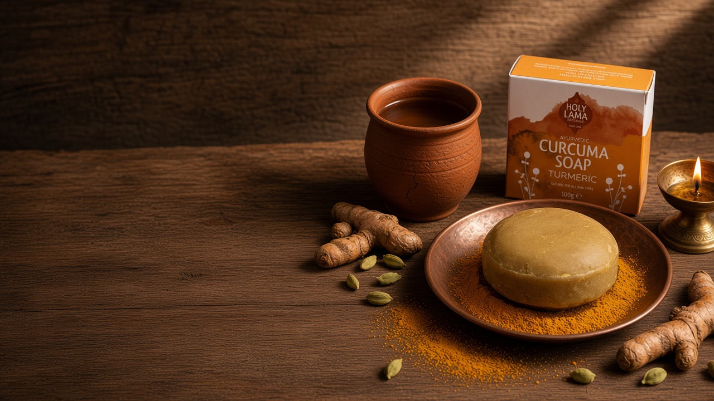

Shampoo Rasayana, ristrutturante, 200 ml
Cosmetici
12,90 €
 Benessere Zen
Benessere ZenUna tradizione nata in India. Si porta in casa con un olio, un’infusione, un lavaggio.
Scegli da dove iniziare
Nella tradizione, le radici arrivano molto indietro nel tempo. Si usano erbe, oli e gesti di ogni giorno.


Nella tradizione si distinguono tre dosha. Non è una diagnosi. Puoi partire da qui per scegliere un olio o un gesto di ogni giorno.
Aria e spazio. Movimento e leggerezza, un ritmo che fa fatica a fermarsi. Nella pratica, routine stabili e oli più caldi.
Aria e spazio. Movimento e leggerezza, un ritmo che fa fatica a fermarsi. Nella pratica, routine stabili e oli più caldi.
I significati appartengono alla tradizione e non sostituiscono il parere di un medico.
Per oltre trent’anni Simona ha fatto massaggi ayurvedici e Reiki. Oggi in negozio consiglia su dosha e chakra.
Puoi partire da quello che usi già. Passa in Via Marcello Provenzali 1, a Cento.
Vai a Cura di séAria e spazio. Movimento e leggerezza, un ritmo che fa fatica a fermarsi. Nella pratica, routine stabili e oli più caldi.


Fuoco e acqua. Trasformazione e determinazione, un fuoco che a volte sale troppo. Nella pratica, pause e cose più fresche.

Terra e acqua. Stabilità e costanza, un passo che a volte si fa pesante. Nella pratica, movimento e spezie più vive.